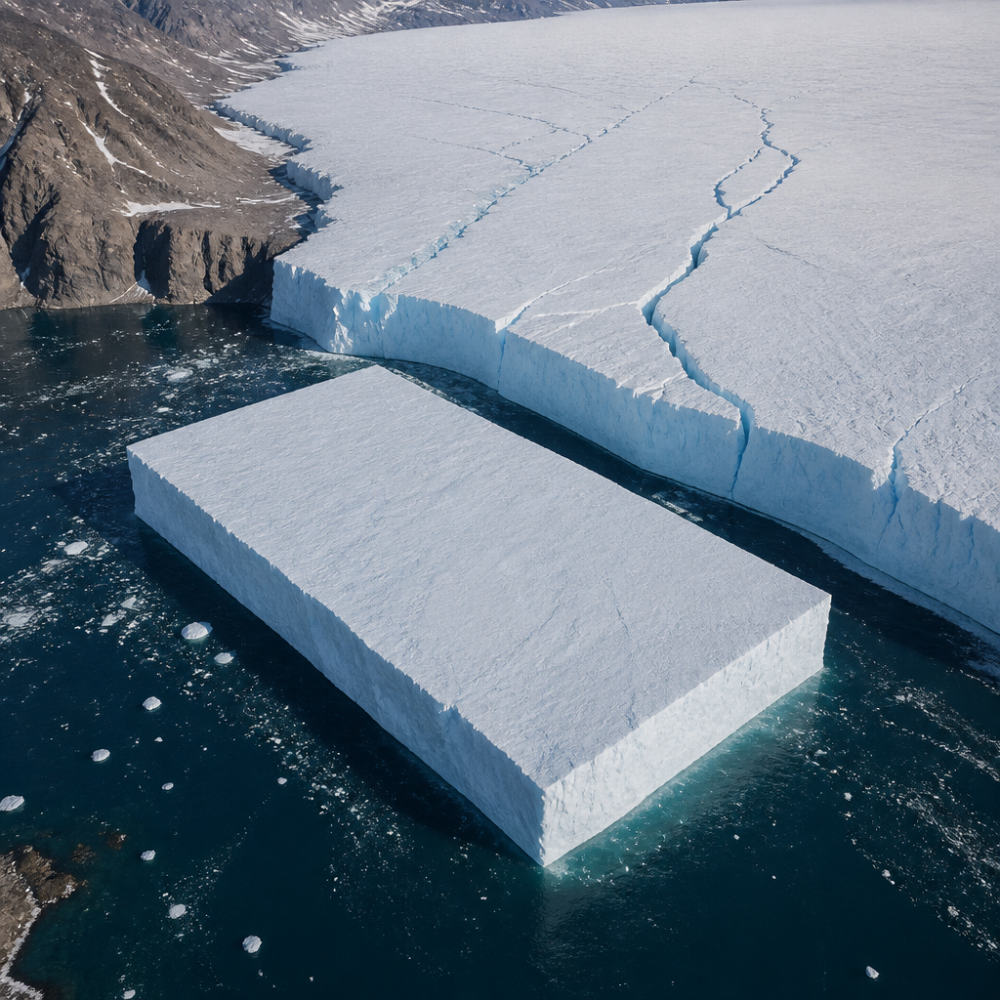
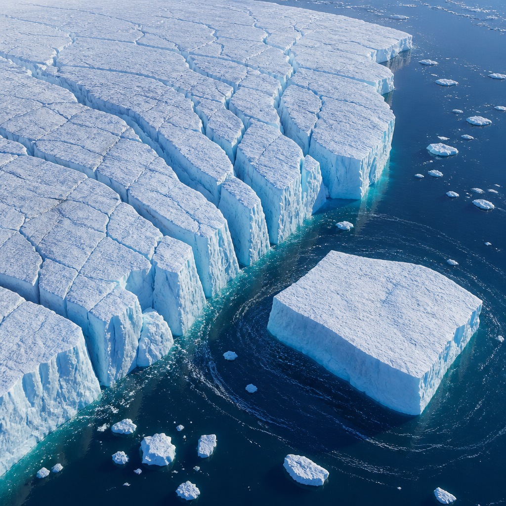

Le immagini radar di Sentinel-1 hanno seguito la crescita delle fratture fino al distacco di una vasta lingua di ghiaccio galleggiante.
Il ghiacciaio Petermann, nella Groenlandia nord-occidentale, ha perso una porzione di lingua di ghiaccio galleggiante il 4 agosto 2026. L’area distaccata misura 76 chilometri quadrati: è il maggiore distacco di ghiaccio galleggiante del ghiacciaio dal 2012 e il più significativo evento di questo tipo nell’Artico dal 2020. Il nuovo iceberg ha una forma tabulare, cioè ampia e relativamente piatta, ed è chiamato anche isola di ghiaccio. La sua superficie è paragonabile a quella di Manhattan e il suo spessore è stimato fino a 150 metri.
Il distacco, detto calving, è il processo con cui una massa di ghiaccio si separa dal margine di un ghiacciaio o di una piattaforma di ghiaccio e diventa un iceberg. In questo caso si è staccata una parte della lingua di ghiaccio del Petermann: una prosecuzione galleggiante del ghiacciaio sul mare. Le osservazioni mostrano quanto rapidamente possano trasformarsi i paesaggi polari.
La missione europea Copernicus Sentinel-1 ha documentato l’evoluzione immediatamente precedente al distacco. Le immagini radar acquisite il 3 agosto mostravano un marcato deterioramento lungo la linea centrale della lingua di ghiaccio. Il giorno seguente, la grande isola di ghiaccio si è separata dal lato orientale del ghiacciaio.
Il radar è uno strumento che osserva la superficie usando onde radio. Per Sentinel-1 questo significa poter raccogliere dati sia di giorno sia di notte e anche attraverso la copertura nuvolosa: caratteristiche particolarmente utili per seguire ghiacciai artici remoti. Un gruppo internazionale di ricercatori, finanziato in parte dal progetto FutureEO ARCTEX dell’ESA, monitora il Petermann con queste immagini dal 2019. Nel tempo ha documentato la crescita graduale delle fratture e i segnali sempre maggiori di instabilità nella lingua di ghiaccio galleggiante.

Già in aprile, le osservazioni interferometriche avevano rilevato deformazioni e fratture nella lingua di ghiaccio. L’interferometria radar confronta immagini radar ripetute per misurare cambiamenti e movimenti della superficie. In questo caso ha fornito un quadro dettagliato dei cambiamenti sviluppati nei mesi prima del calving.
Il dettaglio delle misure è stato reso possibile da immagini radar ad apertura sintetica ripetute a distanza di un giorno. Il radar ad apertura sintetica è una tecnica che consente di ottenere immagini molto dettagliate della superficie terrestre da satellite. I dati sono stati acquisiti durante la fase in tandem di Sentinel-1C e Sentinel-1D, nel periodo di messa in servizio del satellite Sentinel-1D appena lanciato. Hanno permesso di misurare con grande dettaglio la propagazione delle fratture nella piattaforma di ghiaccio e il movimento della superficie della lingua di ghiaccio in risposta alle maree oceaniche, poco prima del distacco.
Il Petermann è stato a lungo una delle maggiori lingue di ghiaccio rimaste in Groenlandia e ha una storia ben documentata di grandi eventi di calving. Grandi isole di ghiaccio si erano formate anche nel 2008, nel 2010 e nel 2012. Dopo il 2012, tuttavia, la lingua galleggiante era rimasta relativamente stabile, pur registrando diversi distacchi su scala minore.
L’ultimo evento potrebbe non essere l’ultima grande trasformazione del ghiacciaio. Due ulteriori grandi isole di ghiaccio, con superfici stimate rispettivamente attorno a 97 e 87 chilometri quadrati, potrebbero separarsi se le fratture esistenti continueranno a propagarsi attraverso la lingua galleggiante. Gli iceberg tabulari di grandi dimensioni sono relativamente comuni nell’Oceano Meridionale attorno all’Antartide, mentre le isole di ghiaccio artiche sono molto più rare.
Studiare queste grandi masse di ghiaccio artiche può produrre conoscenze trasferibili tra le regioni polari. I ricercatori intendono capire come il calving e il deterioramento delle isole di ghiaccio influenzino la dinamica dei ghiacciai, l’innalzamento del livello del mare e l’ambiente oceanico. L’evento offre inoltre l’occasione di osservare come un grande iceberg tabulare si sposti, evolva e infine si frammenti.
Il gruppo di ricerca continuerà a osservare sia il Petermann sia il nuovo iceberg con immagini satellitari, osservazioni aeree e dati di tracciamento. Seguirà il suo movimento e la sua frammentazione nel tempo, per approfondire il comportamento delle grandi isole di ghiaccio artiche e i processi che modellano l’evoluzione del ghiacciaio.
Il distacco ha anche implicazioni pratiche per la navigazione artica e per le attività in mare aperto. Environment and Climate Change Canada sta monitorando la traiettoria dell’iceberg e valutando i possibili rischi per le rotte navali e le infrastrutture. Masse di ghiaccio così grandi possono rimanere nell’oceano per anni e rompersi gradualmente in frammenti più piccoli, che possono diventare più difficili da individuare e seguire.
Il 4 agosto 2026 una sezione di 76 chilometri quadrati della lingua galleggiante del ghiacciaio Petermann si è staccata formando un iceberg tabulare. Sentinel-1 ha osservato fratture e deformazioni prima dell’evento grazie al radar, operativo anche al buio e attraverso le nuvole. Il nuovo iceberg e il ghiacciaio resteranno sotto osservazione per seguirne spostamento, evoluzione e frammentazione.
Questo articolo l'hai letto sul blog di Meteo Radar: un'app che ti mostra da dove vengono i numeri, invece di limitarsi a dartelo. E ogni mattina ne trovi uno nuovo come questo.